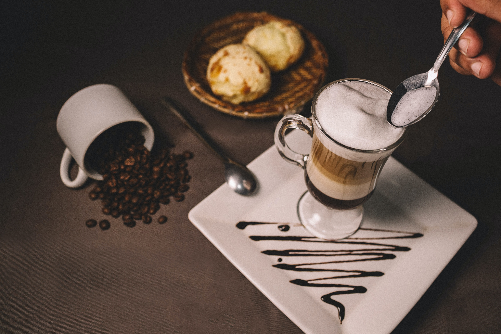

카페 레시피의 공유
(Sharing recipes a cafe)
Coffee
모카 라떼(Mocha Latte)
캬라멜 마끼아또(Caramel macchiato)
바닐라 라떼(Vanila latte)
Non-Coffee
더블 초코 라떼(double chocolate latte)
그린티 라떼(Vanila latte)
밀크티(Mocha Latte)

Wish you happiness